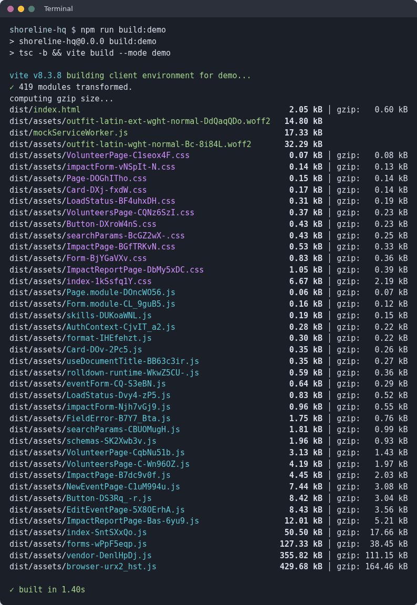
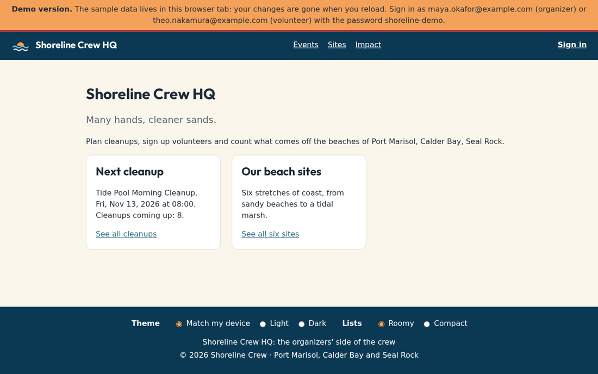

🚀 Lesson 10.2: Deploying
Until today, Shoreline Crew HQ has only ever run on your own computer. This lesson gives it a public address that you can open on your phone, send to a friend or put in a portfolio. On the way you find out what "environment" really means for a front end, build a demo version that carries its own API, teach a static host how a single-page app's addresses work, and hand your checks to GitHub, so every push gets a green tick or a red cross that anyone on the team can see.
🎯 Learning Objectives
By the end of this lesson, you will be able to:
- Explain the HQ's environments (development, tests, preview, demo, deployed) and how Vite modes and
import.meta.envdecide what each build contains - Build a demo version that runs shoreline-api's own code in the browser through MSW's service worker, without a byte of it reaching the normal build
- Make deep links work on a static host with a
_redirectsfallback, and set caching and security headers with_headers - Write a GitHub Actions workflow that runs the type check, lint, unit tests, both builds and the Playwright suite against the real API on every push
- Choose a host by reading its current terms, deploy a draft and then production with the Netlify CLI, and check the live site from the outside
📦 Code for this lesson
Starting code: lesson-33-start.zip · Finished code: lesson-33-end.zip. Each folder has a README with the commands to run it. Today's code includes two files at the top of the course folder, next to the projects: .gitignore and .github/workflows/ci.yml. Names that start with a dot may be hidden in your file manager; VS Code shows them.
In This Lesson
🌍 Environments: Where the HQ Runs
An environment is one place your code runs, with its own settings. The HQ already has more of them than you might have noticed:
| Environment | Started with | Where the API is |
|---|---|---|
| Development | npm run dev (Vite's mode development) | shoreline-api on your computer, from VITE_API_URL in .env.local |
| Unit tests | npx vitest run (mode test) | the API's code inside the test run, through MSW (Lesson 9.2) |
| End-to-end tests | npm run test:e2e (a normal build, mode production) | the real shoreline-api, started by Playwright (Lesson 9.3) |
| Demo (new today) | npm run build:demo (mode demo) | the API's code inside the visitor's browser, through MSW |
| Deployed | a host serving the files of one of those builds | wherever that build was told to look |
Lesson 2.4 showed the mechanism. Vite reads .env files, and every VITE_ value ends up in the JavaScript as plain text. Today adds the second half. Every Vite command runs in a mode: development for npm run dev, production for vite build, and any name you choose with --mode (you already used --mode analyze in Lesson 10.1). The mode decides which extra env files are read (.env.demo, .env.demo.local), and it reaches your code as import.meta.env.MODE.
The important word is build. A front end has no "server settings" that change after it is built. When Vite builds, it replaces import.meta.env.MODE and every VITE_ variable with its value. if (import.meta.env.MODE === 'demo') becomes if ('production' === 'demo'). The minifier sees a condition that is always false and removes the whole branch, along with everything only that branch imports. Each environment is a different build of the same source, and the files that reach a visitor contain only what that build kept.
The problem with "just deploy it"
Build the HQ as it is, put the files on a host, and open the site: every page says it could not reach the server. The build was told VITE_API_URL=http://localhost:4000, and in a visitor's browser localhost means the visitor's own computer, where no shoreline-api is running. Your laptop is not on the internet, and even when it is switched on, nobody else can reach it. There are three honest ways out:
| Option | What visitors get | Cost |
|---|---|---|
| A demo build that runs the API's code in the browser (this lesson) | The whole HQ with the sample data, working on any static host; each visitor has a private copy that resets on reload | Free; a bigger download for demo visitors |
| Put shoreline-api on a Node.js host too | Shared data for everyone, until the host restarts it (the API keeps data in memory) | Another account; free Node.js plans usually sleep when idle; a real app would also need a database |
Deploy with VITE_API_URL=http://localhost:4000 | A site that works only for you, while your API runs | Free, and useless to anyone else |
💡 Mental model: the practice beach
Before a big cleanup, the crew trains new volunteers on a practice beach: same buckets, same grabbers, same check-in clipboard, but the "trash" is planted and gets reset after every session. Nobody's work there counts, and nobody can break the real beach. The demo build is the HQ's practice beach. Every page, form and rule is the real thing, because it is the API's own code answering, while the data is sample data that belongs to one visitor and resets when they reload. It is perfect for a portfolio, a client preview or a teacher, and it is honest about what it is.
Why this matters: "Can I see it?" is the first thing an interviewer, a client or a new teammate asks. A live link that works without any setup on their side answers it in five seconds, and the habits around it (separate builds per environment, nothing secret in front-end code, checks before every deploy) are exactly what teams expect from a developer who ships.
🎭 Demo Mode: the API Inside the Browser
Lesson 9.2 put shoreline-api's own code (src/mocks/core) behind MSW, so Vitest could answer the HQ's requests without a server. MSW has a second way in that works in a real browser: a service worker. A service worker is a small script that the browser installs for a site and runs beside its pages; it sees every request the pages make and may answer some of them itself. MSW's worker (a file called mockServiceWorker.js) passes each request to the handlers in the page, and the handlers are the same ones the tests use. Decision 3 of the course pays off: the tests, the server and now the demo all run one API core, so they cannot disagree.
The demo answers on the site's own address: a request for https://your-site.netlify.app/api/events never leaves the browser, and everything else (the page, its JavaScript, the six site pictures) comes from the host as usual. Four small pieces make it work, and Step 2 adds them:
- A mode check and a dynamic import in
main.tsx: in the demo build, start the in-browser API before the HQ renders, so the first loader's request already finds it. - The API's address in
client.ts: in the demo build, the site's own origin (window.location.origin) instead ofVITE_API_URL, so the same build works at any address you deploy it to. - The worker file: MSW's Vite plugin adds
mockServiceWorker.jsto the build, only in demo mode, the same way--mode analyzeswitched the visualizer on in Lesson 10.1. - A banner that says what this version is and which sample accounts to sign in with, again only in the demo build.
Here is the start-up code you will add to main.tsx:
// The demo build (npm run build:demo) starts its own API in the browser before the first request
if (import.meta.env.MODE === 'demo') {
const { startDemoApi } = await import('./mocks/browser.ts')
await startDemoApi()
}awaitat the top level of a module is allowed in the HQ's build target: the module waits for the worker before it renders, so the HQ never fires a request too early.- In the normal build the condition is
'production' === 'demo', and the wholeifdisappears, theimport()with it. Step 3 proves it with the build table and the budget test from Lesson 10.1. (Measured: even a normalimportat the top of the file is removed with the dead branch. Theimport()says what you mean, and in the demo build it keeps the API's code in a file of its own.) - TypeScript checks this like any other code:
startDemoApiis typed fromsrc/mocks/browser.ts, and a typo in its name is atsc -berror, not a broken demo.
⚠️ What the demo is not
Each visitor gets their own copy of the sample data, in their own tab. Two people never see each other's changes, a reload starts again from the sample data (and signs you out, with one 401 in the console as the old sign-in is refused), and the passwords are the public sample password. That is why the banner says so on every page. Nothing in it is secret, which is the only reason it may be public: a demo of an app with real data needs a real, protected API.
🗺️ Static Hosts and Deep Links
The HQ's build is a folder of plain files: index.html, assets/, a favicon and now pictures. A static host stores such a folder on servers around the world and sends each file when it is asked for, over HTTPS, usually through a CDN. There is no Node.js and no code of yours running on its side, which is why free plans can afford to host it.
That model has one gap for a single-page app. Open https://your-site.netlify.app/ and click through to a cleanup: React Router changes the address bar to /events/e08 without asking the host for anything. Now reload, or send the link to a friend. The browser asks the host for /events/e08, the host looks for that file, and there is none. Measured with Netlify's own local server and the demo build, before adding the rule below:
Expected output (shortened, from curl -i http://localhost:8888/events/e08)
HTTP/1.1 404 Not Found
server: Netlify
...
content-type: text/plain; charset=utf-8
...
404 Not FoundThe fix is one line in a file Netlify reads from the published folder, _redirects:
# Netlify: every address the host has no file for gets index.html, and React Router shows the page
/* /index.html 200/*matches every address,/index.htmlis what to send, and200makes it a rewrite: the browser keeps/events/e08in the address bar and gets the HQ's page with a normal "OK". The HQ starts, React Router reads the address, and shows the cleanup. This is the SPA fallback.- Real files still win: Netlify applies such a rule only when no file exists at that path, so
/assets/vendor-….jsand/images/sites/pelican-point.jpgare served as they are. - Files in
public/are copied intodist/by every build, which is the folder you deploy. - Addresses the HQ does not know, such as
/no-such-page, now getindex.htmltoo, and the HQ shows its own "Page not found" (Lesson 6.1). The host answers200for them; for an app behind a sign-in that is the usual trade.
Caching: forever for some files, never for one
Lesson 10.1 set up the build so that every file in assets/ has a hash in its name that changes whenever its content changes. That makes them safe to cache for as long as a browser likes: a new version is a new name. index.html is the opposite: its name never changes, and it is the file that points at the new names, so browsers must check it again on every visit. A second Netlify file, _headers, says that, plus three safe defaults:
# Netlify: extra response headers (Lesson 10.2)
# Files with a content hash in their name never change: browsers may keep them for a year
/assets/*
Cache-Control: public, max-age=31536000, immutable
# Every response: safe defaults for an app with sign-in and forms
/*
X-Content-Type-Options: nosniff
Referrer-Policy: strict-origin-when-cross-origin
X-Frame-Options: DENY- A line that starts at the left edge is an address pattern; the indented lines under it are headers for every response that matches. A response can match several rules and gets all their headers.
max-age=31536000is one year in seconds;immutabletells the browser not even to ask whether the file changed. Nothing is said aboutindex.html, so it keeps the host's default, which makes browsers check with the host on every visit (Netlify documents that default; check it on your live site in Step 7).nosniffstops browsers from guessing a file's type,Referrer-Policykeeps full addresses (with their search parameters) from leaking to other sites, andX-Frame-Options: DENYstops other sites from showing the HQ inside a frame to trick people into clicking its buttons.
🏷️ Choosing a Host, Honestly
Almost any host can serve a folder of files. The real question is "may we, and what does it count?", because free plans come with terms. Here is what three common choices said at the time of writing; terms change, so open each link before you choose:
| Host (free plan) | Who may use it | What it counts | Reads _redirects / _headers? |
|---|---|---|---|
| Netlify Free | Commercial projects are allowed (Netlify's announcement of the plan) | 300 credits a month, a hard limit: a production deploy costs 15 credits, 1 GB of bandwidth 20, 10,000 requests 2; deploy previews and branch deploys are not counted (credit-based plans) | Yes, both |
| Vercel Hobby | "Non-commercial personal use only" (fair use guidelines) | Monthly allowances | No: it reads vercel.json instead |
| GitHub Pages | Not for running an online business (GitHub Pages limits) | Usage limits | No: no rewrites and no custom headers |
The course uses Netlify Free: a portfolio demo of a volunteer group's app is well within its terms, and it reads the two files you just wrote. Do the credit arithmetic once. A visit to the demo downloads about a megabyte (the HQ plus the in-browser API), so 1,000 visits a month cost roughly 20 credits of bandwidth and a few of requests. The expensive part is deploying: each production deploy costs 15 credits, so twenty of them use a whole month. That is one reason this lesson deploys by hand, after the checks are green, instead of on every push (the FAQ shows the automatic way and its cost).
🤖 Checks on Every Push with GitHub Actions
Since Module 9 you have run npx vitest run and npm run test:e2e by hand. People forget, especially on the day a small fix "obviously" can't break anything. Continuous integration (CI) means a computer runs the checks every time code reaches the shared repository and marks each change with a green tick or a red cross. On GitHub this is GitHub Actions: you describe the checks in a workflow, a YAML file in .github/workflows/, and GitHub runs it on a fresh virtual machine (a runner) for every push. Public repositories run on GitHub's standard runners for free; private ones get a monthly allowance of minutes (your account's billing page shows the current numbers).
💡 Mental model: the morning gear check
Before the crew drives out, someone who did not pack the van checks it against the list: grabbers, gloves, bags, first-aid kit, scales. They don't know what you meant to pack, only what is in the van. A runner is that person. It starts with an empty machine, copies what you committed and nothing else (no node_modules, no .env.local, no running API), and runs the list. A green run proves the HQ works from what is in the repository, not from something that happens to be on your laptop.
One repository, two jobs
GitHub only looks for workflows in .github/workflows/ at the top of a repository. The e2e tests start shoreline-api from ../shoreline-api (Lesson 9.3's playwright.config.ts), so the repository must hold both folders side by side: the course folder shoreline/ becomes the repository, with one workflow at its top. Here is the whole file you will write in Step 5:
# Runs on GitHub's computers for every push to main and every pull request (Lesson 10.2).
# The course folder is the repository: shoreline-hq and shoreline-api sit side by side, as on your computer.
name: CI
on:
push:
branches: [main]
pull_request:
# The checks only read the code: no write access to the repository
permissions:
contents: read
jobs:
checks:
name: Types, lint, unit tests and builds
runs-on: ubuntu-latest
defaults:
run:
working-directory: shoreline-hq
steps:
- uses: actions/checkout@v7
- uses: actions/setup-node@v7
with:
node-version: 24
cache: npm
cache-dependency-path: shoreline-hq/package-lock.json
- run: npm ci
- run: npx tsc -b
# The HQ's rule is zero warnings: here a warning fails the run too
- run: npm run lint -- --deny-warnings
- run: npx vitest run
- run: npm run build
# The version you deploy must build as well
- run: npm run build:demo
e2e:
name: End-to-end tests with shoreline-api
# Only when the quick checks are green: no browser minutes spent on a change that does not compile
needs: checks
runs-on: ubuntu-latest
defaults:
run:
working-directory: shoreline-hq
steps:
- uses: actions/checkout@v7
- uses: actions/setup-node@v7
with:
node-version: 24
cache: npm
cache-dependency-path: shoreline-hq/package-lock.json
- run: npm ci
# Chromium plus the system libraries it needs on a fresh Ubuntu machine
- run: npx playwright install --with-deps chromium
# playwright.config.ts starts ../shoreline-api and a preview of the normal build
- run: npm run test:e2e
# When a test fails, keep Playwright's report (traces included) for a week
- uses: actions/upload-artifact@v7
if: failure()
with:
name: playwright-report
path: shoreline-hq/playwright-report/
retention-days: 7onlists the events that start a run: pushes tomain, and pull requests (a teammate's proposed change gets checked before anyone merges it).permissions: contents: readgives the workflow read access only. Least privilege: checks never need to change your repository.- A workflow has jobs, each on its own runner; a job has steps that run in order, and the first one that fails stops the job and turns the run red.
defaults.run.working-directorymakes everyrunstep start inshoreline-hq, as if you had typedcd shoreline-hqfirst. uses:runs a ready-made action:actions/checkoutcopies the repository onto the runner,actions/setup-nodeinstalls Node.js 24 and caches npm's downloads, keyed on the lockfile.@v7is the major version, the current one at the time of writing (checkout, setup-node, upload-artifact).npm ci, notnpm install: it installs exactly whatpackage-lock.jsonsays and fails if the lockfile andpackage.jsondisagree, which is what a check should do.npm run lint -- --deny-warnings: the--passes the flag on to oxlint, which otherwise exits successfully with warnings (Common Mistakes shows it). The HQ's rule since Module 3 is zero warnings, and a warning can mean the React Compiler skipped a component (Lesson 5.3).- Both builds run: the normal one proves the code compiles; the demo build is the one you deploy, so it must never be the first to find a problem.
Should CI run the end-to-end tests?
Lesson 9.3 left this decision for today. For the HQ the answer is yes, and the reason is specific to this project: shoreline-api needs no install, no database and no account, and it is already in the repository, so the runner can start the real API exactly as your computer does. (Many real back ends are harder to start in CI, and teams then run end-to-end tests against a shared test server, or less often.) Three choices keep it sensible:
needs: checksmakes thee2ejob wait for the quick job and skip itself if that one is red: no minutes spent starting browsers for a change that does not compile.- It tests the normal build against the real API. The demo build runs the same API core, but only the normal build talks to a server over the network the way a production HQ would, and the size budget in
bundle.spec.tskeeps checking that no demo code leaks into it. npx playwright install --with-deps chromiuminstalls Chromium and the Linux libraries it needs on a fresh machine (on your computer you installed the browser in Lesson 9.3). When a test fails,upload-artifactkeeps Playwright's HTML report, with its traces, as a download on the run's page for a week. Itspathstarts from the top of the repository, becauseworking-directoryonly applies torunsteps.
The checks do not deploy anything. Deploying stays a step you take on purpose, after a green run (Step 7). On this course's computer, the whole list ran in a fresh copy of the course folder, with no node_modules, no .env.local and CI=true, the way a runner sees it: install, type check, lint, 49 unit tests and both builds took about 15 seconds, and the 21 end-to-end tests passed.
⚠️ Common Mistakes
Each of these was tried on a copy of the HQ while this lesson was checked. Deploying is mostly checking, and most of these only show up when you look from the outside.
⚠️ Deciding "demo or not" while the app runs
It looks reasonable to start the in-browser API "when the HQ runs on Netlify":
// Start the in-browser API when the HQ runs on Netlify
if (window.location.hostname.endsWith('.netlify.app')) {
const { startDemoApi } = await import('./mocks/browser.ts')
await startDemoApi()
}It type-checks, and it even works on your Netlify site. But the bundler can't know the hostname in advance, so the API's code stays in the normal build. Measured with npx vite build:
Expected output (shortened)
dist/assets/index-BjwH1TAc.js 50.04 kB │ gzip: 17.51 kB
dist/assets/forms-wPpF5eqp.js 127.33 kB │ gzip: 38.45 kB
dist/assets/vendor-DenlHpDj.js 355.82 kB │ gzip: 111.15 kB
dist/assets/browser-urx2_hst.js 429.68 kB │ gzip: 164.46 kBWorse, the day someone deploys the real HQ (with a real API) to Netlify, it quietly answers from sample data instead. A build decision belongs in the build: import.meta.env.MODE, replaced with text by Vite, so the dead branch is removed.
⚠️ A lint step that passes with warnings
oxlint reports warnings but exits successfully, so npm run lint alone never turns a CI run red. Measured with an unused variable in DemoBanner.tsx: npm run lint printed Found 1 warning and 0 errors. and exited with 0 (success). With the flag the workflow uses:
Expected output (shortened, from npm run lint -- --deny-warnings)
⚠ eslint(no-unused-vars): Variable 'password' is declared but never used. Unused variables should start with a '_'.
...
Found 1 warning and 0 errors.and the exit code is 1, which is what makes a step fail. Read the warning as feedback, fix it, and the run turns green.
⚠️ A workflow that never runs, or runs an old action
YAML cares about indentation, and a workflow with a YAML error does not run at all: GitHub reports the problem on the Actions tab instead of running your checks. Copying from an old tutorial causes the other classic failure: an action version too old for today's runners. actionlint, a free workflow checker (Exercise 1), catches both before you push. Measured with actionlint 1.7.12, first with one step indented one space too little, then with actions/checkout@v3:
Expected output
.github/workflows/ci.yml:15:4: could not parse as YAML: did not find expected key [syntax-check]
.github/workflows/ci.yml:22:15: the runner of "actions/checkout@v3" action is too old to run on GitHub Actions. update the action's version to fix this issue [action]Note where the first message points: line 15, the job that contains the bad step, not the step itself. YAML errors are often reported where the parser gave up, so read upward from the line number.
⚠️ Caching everything for a year
Writing the Cache-Control rule for /* instead of /assets/* looks like a bigger speed-up. It also covers index.html, so returning visitors keep the old page for up to a year, and the old page points at the old files. Your next deploy is invisible to them, and nothing in your own browser shows it if you cleared its cache. Cache files forever only when their name changes with their content.
⚠️ _redirects next to package.json
Netlify reads _redirects and _headers from the folder it publishes, dist/. Files in shoreline-hq/ itself never get there; files in shoreline-hq/public/ are copied by every build. With the file in the wrong place, the site works until somebody reloads a page, and then shows the "404 Not Found" from "Static Hosts and Deep Links". After every change, ls dist (PowerShell: dir dist) should list both files.
🛠️ Project: Shoreline Crew HQ Goes Live
You will make the course folder a Git repository, add the demo build and the host's rules, check it all locally the way the host and the runner will see it, and then put it on GitHub and Netlify. Steps 6 and 7 need your free GitHub account and a free Netlify account (you can sign up for Netlify with GitHub). Git must be installed (git --version prints its version).
🧩 Version note: hosts change their screens
This lesson was checked with Netlify CLI 27.17, MSW 3.0.5 and the GitHub Actions versions above, without creating accounts or deploying anything from the course's computer: everything local was run, and the GitHub and Netlify steps follow their documentation. Sign-up pages, dashboard buttons and CLI prompts change more often than code. When something on screen differs, look for the same idea (create a repository, create a project, deploy a folder) and trust each command's own --help.
Step 1: One repository for the course folder (10 min)
Open a terminal in your course folder shoreline (the one that holds shoreline-api, shoreline-hq and ts-lab). Each project has its own .gitignore or none; create one at the top that covers every folder:
# The course folder as one Git repository (Lesson 10.2). Each project's own .gitignore still
# applies inside it; these lines cover every folder, including shoreline-api and ts-lab.
node_modules/
.env.local
# The Netlify command-line tool writes its link to your account here: not code
.netlify/
.DS_StoreThen make the repository and look before you commit:
git init -b main
git add .
git statusgit status lists every file about to be committed. Read it with Lesson 2.4's eyes: no .env.local, no node_modules, no dist. Then let Git prove it for the files that matter:
git check-ignore -v shoreline-hq/.env.local shoreline-hq/node_modules shoreline-hq/distExpected output
shoreline-hq/.gitignore:13:*.local shoreline-hq/.env.local
shoreline-hq/.gitignore:10:node_modules shoreline-hq/node_modules
shoreline-hq/.gitignore:11:dist shoreline-hq/distEach line names the file and line of the rule that ignores it. (In the course's copy, 188 files were staged, including both .env.example files and no .env.local.) Commit:
git commit -m "Shoreline Crew HQ: the course code"If Git asks who you are first, it prints the two git config --global commands to run (your name and email); run them and commit again.
Step 2: The demo build (20 min)
All of this happens in shoreline-hq. MSW is already installed (Lesson 9.2). First the worker file: MSW's Vite plugin can add it to the build, and you only want it in demo mode. Change these lines in vite.config.ts:
import react, { reactCompilerPreset } from '@vitejs/plugin-react'
import babel from '@rolldown/plugin-babel'
+import { msw } from 'msw/vite'
import { visualizer } from 'rollup-plugin-visualizer'
import { defineConfig } from 'vite' // `npm run analyze` only: a map of every chunk and what is inside it (dist/stats.html)
mode === 'analyze' && visualizer({ filename: 'dist/stats.html', gzipSize: true }),
+ // `npm run build:demo` only: adds MSW's service worker file (mockServiceWorker.js) to the build
+ mode === 'demo' && msw({ mode: 'worker-only' }),
],
build: {worker-only means "just add mockServiceWorker.js to the output; I start MSW myself". A script for the new build in package.json:
"dev": "vite",
"build": "tsc -b && vite build",
+ "build:demo": "tsc -b && vite build --mode demo",
"analyze": "vite build --mode analyze",
"lint": "oxlint",Now the in-browser API. Create src/mocks/browser.ts, next to the folders you copied from shoreline-api in Lesson 9.2:
// The demo build's API (Lesson 10.2): shoreline-api's own code, running in this browser tab.
// MSW's service worker hands every request for /api/... on this site to the same handlers the tests use.
import { setupWorker } from 'msw/browser'
import { createHandlers } from './msw/handlers.ts'
export async function startDemoApi() {
// The demo answers on the site's own address, wherever it is deployed
const { handlers } = createHandlers({ baseUrl: window.location.origin })
const worker = setupWorker(...handlers)
await worker.start({
// Everything that is not /api (the page, its files, the site pictures) goes to the host as usual
onUnhandledFrame: 'bypass',
// No "[MSW] …" line in the console for every request
quiet: true,
})
}setupWorkeris the browser twin of thesetupServerfromsrc/test/server.ts: same handlers, different way in.worker.start()registers the service worker and resolves when it is ready to answer, which is whymain.tsxwaits for it.onUnhandledFrame: 'bypass': requests without a handler go to the network quietly. In tests you used'error', because there every unexpected request is a bug; here the page's own files are expected.
Start it from main.tsx, before the first render:
})
+// The demo build (npm run build:demo) starts its own API in the browser before the first request
+if (import.meta.env.MODE === 'demo') {
+ const { startDemoApi } = await import('./mocks/browser.ts')
+ await startDemoApi()
+}
+
createRoot(document.getElementById('root')!).render(
<StrictMode>and tell the API client where the demo's API answers, in src/api/client.ts:
function apiBaseUrl(): string {
+ // The demo build's API runs in the browser and answers on the site's own address (Lesson 10.2)
+ if (import.meta.env.MODE === 'demo') {
+ return window.location.origin
+ }
const url = import.meta.env.VITE_API_URL
if (url === undefined || url === '') {The site pictures come from shoreline-api's public/images folder, which the real server serves. On a static host they must be files of the site, so copy the folder into the HQ's public/ (macOS, Linux and Git Bash):
cp -R ../shoreline-api/public/images public/In PowerShell:
Copy-Item -Recurse ..\shoreline-api\public\images public\The API core builds each picture's address from the request (/images/sites/pelican-point.jpg on the same origin), so they just work. The normal build carries the six pictures (about 185 kB) too; a file on a host costs nothing until someone asks for it. Last, the banner. Create the component and its styles:
import styles from './DemoBanner.module.css'
// Only in the demo build (Lesson 10.2): say what this version is, and how to try the organizer pages
export function DemoBanner() {
return (
<aside aria-label="Demo version" className={styles.banner}>
<p>
<strong>Demo version.</strong> The sample data lives in this browser tab: your changes are gone when you
reload. Sign in as maya.okafor@example.com (organizer) or theo.nakamura@example.com (volunteer) with
the password shoreline-demo.
</p>
</aside>
)
}/* Sunrise with Ink text (7.03:1) in both themes */
.banner {
background: var(--sunrise);
color: var(--ink);
padding: 0.5rem 1.5rem;
text-align: center;
}
.banner p {
margin: 0;
}An <aside> with a label is a landmark screen-reader users can jump to, and it sits above the header so it is the first thing anyone reads. Show it in AppLayout.tsx:
import { onSessionChange } from '../api/client.ts'
import styles from './AppLayout.module.css'
+import { DemoBanner } from './DemoBanner.tsx'
import { Footer } from './Footer.tsx'
import { Header } from './Header.tsx' Skip to main content
</a>
+ {import.meta.env.MODE === 'demo' && <DemoBanner />}
<Header />
<div role="status" className={styles.pending}>Build the demo:
npm run build:demo
Expected output (shortened)
dist/mockServiceWorker.js 17.33 kB
...
dist/assets/index-SntSXxQo.js 50.50 kB │ gzip: 17.66 kB
dist/assets/forms-wPpF5eqp.js 127.33 kB │ gzip: 38.45 kB
dist/assets/vendor-DenlHpDj.js 355.82 kB │ gzip: 111.15 kB
dist/assets/browser-urx2_hst.js 429.68 kB │ gzip: 164.46 kB
...
✓ built in 1.42sThe new browser file (429.68 kB) is MSW plus the API's code and its sample data, loaded only by this build, and mockServiceWorker.js is the worker file the plugin added. dist/ now also holds the images folder; _redirects and _headers come in Step 4. (The demo build also splits a few small shared files out of index; that is Rolldown's choice for this build, and the normal build is unaffected.)
Step 3: Prove the demo needs no API, and the normal build no demo (10 min)
Stop shoreline-api in its terminal (Ctrl+C), then preview the demo build:
npm run previewOpen http://localhost:4173. The banner is there, and every page works with no API running. Sign in as Maya (maya.okafor@example.com, shoreline-demo), plan a cleanup, open today's cleanup and report its impact with a photo. Then reload: the new cleanup is gone and you are signed out, as the banner promised.

The course checked the same tour with Playwright against a host-like static server and no API at all: not one request left the site's own address, the six pictures loaded at 1200 pixels wide, a deep link to /events/e08 rendered in 1.4 seconds including the worker's start, the uploaded photo came back from the in-browser API, and after the reload the only console message was the expected 401. Stop the preview (Ctrl+C) and start shoreline-api again. Now the other half of the promise:
npm run build
npx playwright test e2e/bundle.spec.tsExpected output (shortened, from npm run build)
dist/assets/index-Bgq2oWDs.js 62.74 kB │ gzip: 21.44 kB
dist/assets/forms-wPpF5eqp.js 127.33 kB │ gzip: 38.45 kB
dist/assets/vendor-DenlHpDj.js 355.82 kB │ gzip: 111.15 kB
...
✓ built in 1.37sNo browser file, the same index size as at the end of Lesson 10.1 (within a few bytes), and Lesson 10.1's budget test passes: 1 passed. Searching the normal build's files for setupWorker or Demo version finds nothing.
Step 4: The host's rules, checked with the host's own server (10 min)
Netlify's command-line tool includes a local server that follows its rules. It needs no account with --offline. Build the demo again and serve it as Netlify would:
npm run build:demo
npx netlify-cli dev --offline --dir distThe first time, npx asks to install netlify-cli: answer y. It is a big package, so give it a minute. When it is ready it prints:
Expected output (shortened)
╭─────────────────────── ⬥ ────────────────────────╮
│ │
│ Local dev server ready: http://localhost:8888 │
│ │
╰───────────────────────────────────────────────────╯Open http://localhost:8888/, click through to a cleanup, and reload: "404 Not Found", the gap from "Static Hosts and Deep Links". Stop the server, create public/_redirects and public/_headers with the contents shown there, build the demo and start the server again. Reload the cleanup now and it stays. In a second terminal, look at the headers (curl comes with macOS, Linux and Windows 10 and later; in PowerShell type curl.exe):
curl -I http://localhost:8888/events/e08Expected output (shortened)
HTTP/1.1 200 OK
...
X-Content-Type-Options: nosniff
Referrer-Policy: strict-origin-when-cross-origin
X-Frame-Options: DENY
...
content-type: text/html; charset=utf-8The page answers 200 with your three security headers. One rule can't be checked here: asked for a file in assets/, the local server answered with its own development setting, not yours:
Expected output (shortened, from curl -I on the vendor file)
HTTP/1.1 200 OK
...
cache-control: public, max-age=0So the caching rule goes on the live checklist in Step 7. Two more things the tool did: it created a .netlify folder for its own state, and it added two lines to shoreline-hq/.gitignore (# Local Netlify folder and .netlify). Keep them; your top-level .gitignore already ignores that folder too. Stop the server.
Step 5: The workflow, run by you first (12 min)
At the top of the course folder, create the folders .github and, inside it, workflows (the dot matters, and the names must be exactly these). In them create ci.yml with the workflow from "Checks on Every Push". Type it rather than paste it: indentation is part of YAML's grammar, two spaces per level, never tabs. VS Code's status bar shows "Spaces: 2" when the file is set up right.
Before you hand the list to a robot, run it once yourself, in shoreline-hq, with shoreline-api running for the last command:
npm ci
npx tsc -b
npm run lint -- --deny-warnings
npx vitest run
npm run build
npm run build:demo
npm run test:e2eExpected output (the lines that matter)
added 210 packages, and audited 211 packages in 3s
...
Found 0 warnings and 0 errors.
...
Test Files 13 passed (13)
Tests 49 passed (49)
...
Running 21 tests using 1 worker
...
21 passed (13.9s)Everything green on your computer means a red run on GitHub is about the room, not the code: a missing file in the commit, a lockfile out of date, a version difference. Commit today's work from the course folder:
git add .
git status
git commit -m "Demo build, host rules and CI"Step 6: Push to GitHub and watch the run (10 min)
On GitHub, create a new repository named shoreline (the + menu, New repository). Choose Private or Public (see the FAQ), and add nothing to it (no README, no .gitignore, no license): your folder already has its history. GitHub then shows the commands to push an existing repository; they look like this, with your user name:
git remote add origin https://github.com/YOUR-USER-NAME/shoreline.git
git push -u origin mainThe first push asks you to sign in. Git for Windows opens a browser window; on macOS and Linux the simplest routes are GitHub's own gh tool (gh auth login) or a personal access token, as GitHub's documentation on "authenticating with GitHub from Git" describes. Never type your GitHub password into the terminal: GitHub does not accept it there.
Open the repository's Actions tab. A run named after your last commit appears with two jobs, "Types, lint, unit tests and builds" and, once that one is green, "End-to-end tests with shoreline-api". Click a job to watch its steps; each run line expands to the output you saw in Step 5. The first run takes a few minutes (packages, the browser and its system libraries); later runs are faster thanks to the npm cache. When both jobs are green, your commit gets a green tick. If a job is red, open the failed step and read its last lines exactly as you would in your own terminal: the message is the same, only the room is different. A red e2e job also leaves a playwright-report download at the bottom of the run's summary page.
Step 7: Deploy the demo to Netlify (13 min)
Sign up for a free Netlify account at netlify.com. Then, in a terminal in shoreline-hq, connect the command-line tool to your account and create an empty project. The name becomes the address, so pick something unique, such as shoreline-hq- plus your name:
npx netlify-cli login
npx netlify-cli sites:create --name shoreline-hq-yournamelogin opens your browser to authorize the tool. sites:create may ask which team to use, then prints the project's address, https://shoreline-hq-yourname.netlify.app, and links this folder to it (in .netlify, which Git ignores). If the name is taken, choose another. Now build the demo and upload it. Without --prod, Netlify publishes a draft at a temporary address and leaves the live site alone:
npm run build:demo
npx netlify-cli deploy --no-build --dir dist--dir distuploads the folder as it is, with_redirects,_headersand the worker file.--no-buildmatters: the CLI runs a build of its own before deploying unless told not to (itsdeploy --helpsays so), and you have just built the version you want.
It prints the draft's address. Open it, sign in as Maya, click around. If all is well, publish the same folder to the live address (this is the deploy that costs credits):
npx netlify-cli deploy --no-build --dir dist --prodShoreline Crew HQ is on the internet. Now check it from the outside, and tick each line in your journal with what you saw:
🚀 Live launch checklist (keep this)
- Phone: open the address on your phone, on mobile data rather than your Wi-Fi: the banner, the events, the site pictures
- Deep links: open a cleanup, reload; paste
/events/e08and/impactinto a new tab;/no-such-pageshows the HQ's "Page not found" - Sign-in and forms: sign in as Maya, plan a cleanup, check someone in on today's cleanup; reload and see it reset
- Headers:
curl -I https://shoreline-hq-yourname.netlify.app/shows your three security headers and acache-controlthat makes browsers check again;curl -Ion one file from/assets/(copy a name fromdist/assets) showspublic, max-age=31536000, immutable;/_headersis not shown as a file - HTTPS:
http://redirects tohttps://, and the browser shows the padlock - Console: the browser's developer tools show no errors on the pages you visited (apart from the one
401right after a reload while signed in)

The same routine for every later change: checks green on GitHub, npm run build:demo, a draft deploy, a look, then --prod.
✅ Project Completion Checklist
- The course folder is a Git repository with a top-level
.gitignore, andgit check-ignoreproved that.env.local,node_modulesanddiststay out npm run build:demobuilds a demo that works with no API running, shows its banner, and resets on reloadnpm run buildhas nobrowserfile and no banner, and the budget test still passespublic/_redirectsandpublic/_headersare in place, and a reloaded deep link works on Netlify's local server.github/workflows/ci.ymlruns both jobs green on GitHub (or, before you push, every command passed on your computer)- The demo is live on Netlify, and every line of the live launch checklist is ticked in your journal or has a note saying what you found
Your own project: for the app you will plan in Lesson 11.1, write down its environments (where it runs in development, in tests and when deployed), where its data will live once it is public, and whether a demo build like today's is the honest way to show it. The final project asks for a public link and a green CI run, so plan for both from the start.
🏋️ Hands-on Exercises
Exercise 1 is part of the lesson (about 6 minutes, included in the lesson time). Exercises 2 and 3 are optional stretches, not counted in the lesson time.
🏋️ Exercise 1: Check the workflow before GitHub does
A pushed workflow with a mistake costs a round trip to GitHub. Run actionlint on your ci.yml, then break the file on purpose (indent one step by one space less) and read the message. Put the file back and run it once more.
💡 Hint
actionlint's README lists the ways to install it: a download for your system, Homebrew (brew install actionlint), or Docker. Run it from the top of the course folder; with no arguments it checks every file in .github/workflows/, and it only works inside a Git repository (Step 1).
✅ Solution
actionlintA correct file prints nothing: no news is good news. The broken one printed the could not parse as YAML message from Common Mistakes, pointing at the job above the bad step (measured with actionlint 1.7.12, which also accepted the matrix from Exercise 2). The VS Code extension "GitHub Actions" (publisher GitHub) checks workflows as you type too.
🏋️ Exercise 2: Two Node.js versions (optional stretch)
Optional stretch, not counted in the lesson time. The course uses Node.js 24, and Node.js 26 is the newer LTS line. Make the checks job run twice, once per version, with a matrix, so you hear about the next version before you switch to it.
💡 Hint
Under the job, strategy: matrix: node: [24, 26] makes one job per value. Use the value as ${{ matrix.node }} in node-version, and in the job's name so the two runs can be told apart.
✅ Solution
The top of the checks job becomes:
name: Types, lint, unit tests and builds on Node.js ${{ matrix.node }}
runs-on: ubuntu-latest
strategy:
matrix:
node: [24, 26]
defaults:
run:
working-directory: shoreline-hq
steps:
- uses: actions/checkout@v7
- uses: actions/setup-node@v7
with:
node-version: ${{ matrix.node }}
cache: npm
cache-dependency-path: shoreline-hq/package-lock.json
- run: npm ci
- run: npx tsc -b
# The HQ's rule is zero warnings: here a warning fails the run too
- run: npm run lint -- --deny-warnings
- run: npx vitest run
- run: npm run buildThe rest of the job stays as it was. actionlint 1.7.12 accepted the file, and the job's commands passed on Node.js 26.13 in a fresh copy of the course folder (49 tests, both builds). On GitHub the Actions tab shows two check jobs, one per version; the e2e job waits for both. A red 26 with a green 24 is a warning about the future, not a broken site.
🏋️ Exercise 3 (Stretch): The tab that was open during a deploy
Optional stretch, not counted in the lesson time. Someone opens the HQ, you deploy a new version, and then they click Impact. Their tab still runs the old index file, which asks for the old ImpactPage-….js, and that file is gone. Find out what they see, then make the HQ recover by itself.
💡 Hint
Thanks to the SPA fallback, the host answers the missing file with index.html, which is not JavaScript. Vite fires a vite:preloadError event on window when loading a lazy file fails (its documentation suggests this use). Listen for it in main.tsx, and load the new version.
✅ Solution
// After a new deploy, an open tab may ask for files the host no longer has: load the new version
window.addEventListener('vite:preloadError', (event) => {
event.preventDefault()
window.location.reload()
})event.preventDefault() stops Vite from passing the error on, and the reload fetches the new index.html. Measured with two demo builds and a host-like server that swapped one for the other while a tab was open: without the listener, the click showed "Something went wrong on this page" and the console complained that the server responded with a MIME type of text/html instead of JavaScript, and clicking again changed nothing. With it, the tab reloaded (on the page it was showing, the new version), and the next click on Impact opened the new page. Not in the course's code.
🎯 Quick Quiz
🎯 Check Your Understanding
Question 1: You deploy the normal build of the HQ (with VITE_API_URL=http://localhost:4000) and send the link to a friend. What do they see?
Question 2: The home page of the live HQ works, but reloading /events/e08 shows "Not Found". What fixes it?
Question 3: A teammate starts MSW with if (window.location.hostname.endsWith('.netlify.app')) instead of the mode check. What changes?
Question 4: Why may files in /assets/ be cached for a year, but not index.html?
Question 5: In the workflow, why does the e2e job say needs: checks and test the normal build against shoreline-api?
❓ Common Questions at This Stage
Can Netlify deploy automatically when I push to GitHub?
Yes. In Netlify's dashboard you can connect the project to your GitHub repository and give it the build settings: base directory shoreline-hq, build command npm run build:demo, publish directory dist (the same can live in a netlify.toml file). Then every push to main builds and publishes on Netlify's computers, and pull requests get deploy previews at their own addresses. The catch on the free plan: every push to main is a production deploy at 15 credits, while deploy previews are not counted. Pushing many small commits a day can pause the site until the next month, which is why this lesson deploys by hand. (Not set up for this course: check Netlify's documentation for the current settings, including which Node.js version its builds use.)
Could the real shoreline-api go online too?
It runs anywhere Node.js 24 runs, so a Node.js host could serve it, with --cors=https://shoreline-hq-yourname.netlify.app so your site may call it, and the HQ's normal build pointed at its address with VITE_API_URL. Expect three differences: free Node.js plans usually sleep when idle (the first request after a pause is slow), the data lives in memory and resets on every restart, and everyone shares one copy, including strangers who find it. A real app would add a database and real accounts. For a portfolio, the demo build is the honest choice; the React Native course keeps the API on your computer and reaches it from a phone on the same Wi-Fi.
Public or private repository?
Either works: nothing secret is committed (Step 1 checked). A public repository is a portfolio piece employers can read, and its Actions run on GitHub's standard runners for free. Private repositories get a monthly allowance of Action minutes on free accounts; the HQ's two jobs take a few minutes per push, so check your usage page if you push a lot. Client work is usually private unless the client agrees otherwise.
Can the HQ have its own domain?
Yes. Buy a domain from a registrar, add it in the project's domain settings on Netlify, and follow its instructions for the DNS records; hosts typically issue the HTTPS certificate themselves once the domain points at them. Nothing in the build changes: the demo answers on whatever address it is served from, thanks to window.location.origin. Run the live launch checklist again on the new address.
🌟 Going Further: Bonus Challenge
Lesson 10.1 promised numbers that mean more than localhost: run Lighthouse (in Chrome's developer tools) against your live demo, once on desktop and once with its mobile setting, and write down the Performance score and the largest item in its "Opportunities". Then add a Content-Security-Policy header to _headers for /*, starting from default-src 'self', deploy a draft, and read the console: every message is the browser telling you what the policy blocked. Loosen only what the HQ really needs (and note that the service worker, the fonts and the pictures all come from the site itself). Not measured for this course: this is your experiment, which is exactly how teams arrive at a policy.
📓 Learning Journal
Take five to ten minutes and jot down:
- Key concepts you learned today
- Techniques that clicked (and the ones that have not, yet)
- Questions or confusion to look up or bring to the next session
- Ideas to try on your own
- Progress and feelings: how did this lesson go for you?
✍️ This lesson's prompt: Paste your live address and your ticked launch checklist. Then answer the Shoreline Crew's coordinator, who saw the link and asks: "Great, can the volunteers start using this on Saturday?" Explain in a short paragraph, for someone who isn't a developer, what the demo is and isn't, and what it would take (and roughly cost) to run the HQ for real. Finally: which check, the ones on your computer or the ones on GitHub, would you trust more on a busy day, and why?
📝 Lesson Summary
🎓 Key Takeaways
- An environment is a different build of the same source: Vite's mode and
VITE_variables are replaced with text while building, so branches decided by them are removed from the other builds - A deployed front end cannot reach
localhoston your computer; the HQ's demo build runs shoreline-api's own core in the browser through MSW's service worker, started before the first render, and the normal build contains none of it - Static hosts serve files; a single-page app needs a rewrite fallback (
/* /index.html 200inpublic/_redirects) so deep links and reloads work - Hashed files may be cached for a year with
immutable;index.htmlmust be checked on every visit; a few security headers cost one line each - Read a host's current terms before you choose: who may use the free plan and what it counts (on Netlify Free, production deploys are the expensive part)
- CI runs your checks in an empty room on every push:
npm ci,tsc -b, lint with--deny-warnings, Vitest, both builds, and Playwright against the real API after the quick checks pass
| If you want to… | Do this |
|---|---|
| Build the version you deploy | npm run build:demo |
| Serve a build the way Netlify does | npx netlify-cli dev --offline --dir dist |
| Run CI's checks yourself | npm ci, npx tsc -b, npm run lint -- --deny-warnings, npx vitest run, both builds, npm run test:e2e |
| Check a workflow before pushing | actionlint at the top of the repository |
| Deploy a draft, then go live | npx netlify-cli deploy --no-build --dir dist, then the same with --prod |
| Review environment variables | Lesson 2.4: Typing Real Data |
| Review MSW and the API core in tests | Lesson 9.2: Interactions and Async |
🏆 What You've Accomplished
- Shoreline Crew HQ has a public HTTPS address that works on any phone, with no setup for the visitor
- You built a demo version that carries its own API, and proved that the normal build carries none of it
- Deep links, caching and security headers work the way a static host needs them to
- Every push now runs your type check, lint, 49 unit tests, both builds and 21 browser tests on GitHub
- You chose a host by its own terms and checked the live site from the outside with a checklist
For quick answers, see Common Questions at This Stage above.
🔭 Looking Ahead
That closes Module 10, and with it the whole Shoreline Crew HQ build: from a first component to a typed, tested, split and deployed app. In Lesson 11.1: Final Project you do it again on your own, from a brief you choose: plan it, type it first, build it, test it, and ship it with today's routine, a green CI run and a public link included.
📋 Before the Next Lesson
- Make sure both CI jobs are green and the live launch checklist is ticked (compare your top-level files with lesson-33-end.zip)
- Keep the launch checklist and the deploy routine in your journal: the final project uses both
- Collect your Lesson 11.1 notes: visitors and screens (10.1), environments and where the data lives (today), critical journeys (9.3)
- Write today's journal entry, with the answer for the coordinator
🌱 Encouragement for the Journey
Shipping is the step many learners postpone for months, because it feels like a different, scarier skill. Today it was the same skills you have used all course: read the message, check the facts, change one thing, check again. If a run went red or a page said "Not Found", that was the system doing its job before a visitor found the problem. Open your live link on your phone and enjoy it for a moment. You built that, and anyone in the world can see it now.